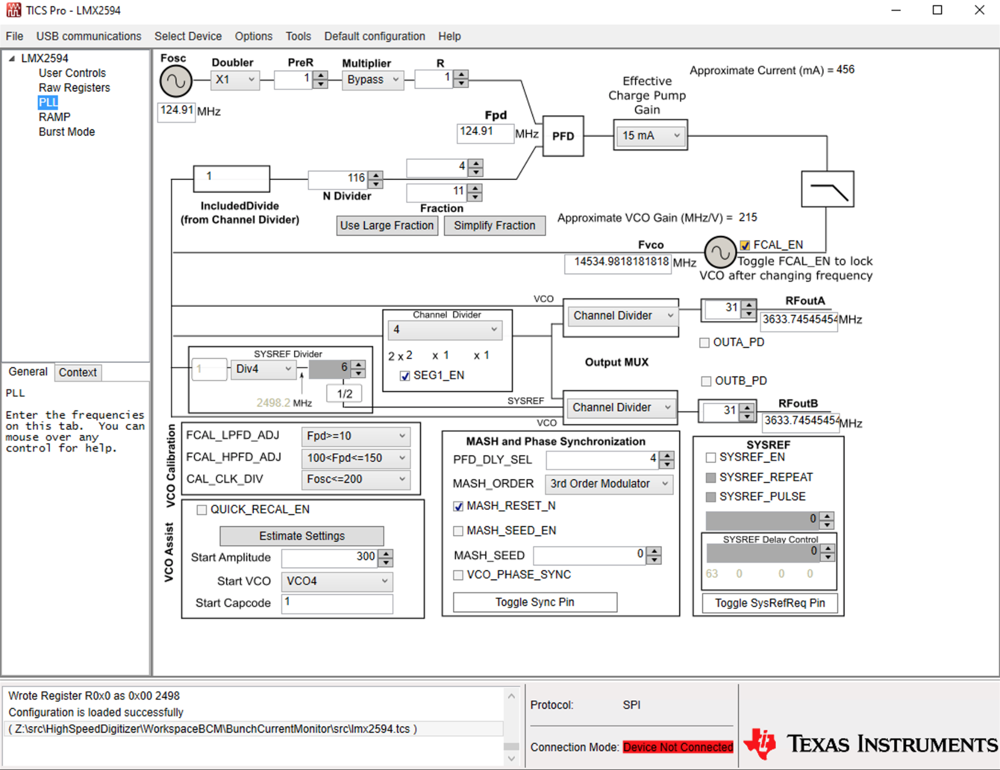

Bunch Current Monitor Changes from High Speed Digitizer
The bunch current monitor shares its hardware platform and much of
its FPGA firmware and software with the high speed digitizer
(HSD). Changes to the HSD firmware, software, and build procedure are noted below.
Orbit Marker
The orbit marker signal is is placed on the training signal line when
the training signal is not being used to recalibrate an ADC channel
after a programmable amplifier gain change.
Data Acquisition Sampling Clock Generation
- Run the WorkspaceBCM/BunchCurrentMonitor/scripts/checkInterleave.py
script and pick an appropriate ADC sampling frequency.
Running the output of the script through ’sort -n’ puts things
into a nice order. The maximum number of ADC samples per
turn is 131072.
- Follow the steps in the high speed digitizer documentation to set the timing system components.
- If using EDM, edit BCM_RawData.edl and set the X axis label to
the time per interleaved sample (Teff).
Here are example values for the Advanced Light Source. The
LMK04208 jitter cleaner settings are the same as those of the high speed
digitizer.
FRF = 499.64 MHz
FEVR = FRF ÷ 4 = 124.91 MHz
Fref_LMK04208 = FEVR = 124.91 MHz (J95–J109 SMA jumper)
Fref_LMX2594 = Fref_LMK04208 = 124.91
MHz (LMK04208 output 4)
FVCO = Fref_LMX2594 × (116+4/11) =
14534.9818181818 MHz
Fsamp = FVCO ÷ 4 = FRF × 80 ÷ 11
= 3633.74545454545 MHz
FFPGA_REFLK_OUT_C = Fref_LMK04208 ÷ 11 = 11.355454545 MHz (LMK04208
output 2)
FADC_AXI = FFPGA_REFLK_OUT_C
× 105
÷ 2.625 = 454.2181818 MHz = Fsamp ÷ 8 (MMCM)
FSYSREF = Fref_LMK04208 ÷ 22 = 5.67772727
MHz (LMK04208 outputs 0 and 1)
Signals from multiple turns are interleaved resulting in an
effective sampling frequency 80 times that of the RF reference:
Feff = FRF × 80 = 39.971 GHz
(Teff ≈ 25.018 ps, 80 points per
bucket, 26240 points per turn)
A complete acquisition with maximum points per sample takes about
29.6 ms to complete:
26240 points × 4096 samples per point per acquisition ÷
3633.75×106 samples per second ≈ 29.6 ms per
acquisition

Interlock Indicator
The status of the interlock relay, if
present, is shown on the bottom line of the display. The
indicator can take on the following values:
Indicator
|
Description
|
Red open contact
|
Interlock relay is open.
|
Green closed contact
|
Interlock relay is closed.
|
Black rectangle
|
Interlock relay is not
installed (neither open nor closed readback are active). |
Red rectangle
|
Interlock relay has been
requested to close, but has not done so.
|
| Green rectangle |
Interlock relay has been
requested to open, but has not done so. |
Orange rectangle
|
Interlock relay state is
unknown (both open and closed readback are active).
|
Adapting to Other Sites
- Run the checkInterleave.py script in the
WorkspaceBCM/BunchCurrentMonitor/scripts directory to find an acceptable
sampling frequency and interleave factor.
- Run the TICS Pro software (Windows only) to produce a set of LMX2594 register values.
- Run TICS Pro to get a
new set of LMK04208 register values as well. Make sure that all
the constraints noted in the HSD documentation are met.
- Run the createRFCLKheader.sh script in the
WorkspaceBCM/BunchCurrentMonitor/scripts directory to convert the TICS Pro '.tcs' files to C initializers.
- Edit config.h and set the values based on the above. The
MMCM multiplier should be set to place the MMCM VCO between 800 and 1440
MHz. The MMCM multiplier and divider fractions, if any, must be an
integer number of eighths (0.125, 0.25, 0.375, 0.5, 0.625, 0.75,
0.875). You can also use the the Vivado block design editor to
determine the settings and then copy the multiplier and divider value
that the design wizard chooses.
- Edit the HighSpeedDigitizerTop.xdc constraints file and enter the
appropriate numbers for the FPGA_REFCLK_OUT_C_P and SYSREF_FPGA_C_P
clocks periods.
Using XM-500
With a minor change the firmware and software will work with the
XM-500 mezzanine card that is supplied with the ZCU111 kit. Open
the block design and configure the ADCs to AC Link coupling then
regenerate the block design and rebuild the project. On startup
there will be lots of messages about inability to set values to the
analog front end card components, but these can be ignored. To properly perform an initial calibration the RF
ADCs require that there be no signal present during a (re)start
operation. This can not be controlled by the FPGA when the XM-500
is used so the ADC should be restarted when no beam signal is present.
The orbit timing marker signal is present on ADCIO_13 (J10-14). A pseudo-ground is present on ADCIO_14 (J10-12).
Building
- Run the createVerilogIDX.sh script in the
WorkspaceBCM/BunchCurrentMonitor/src directory to create gpioIDX.v in the firmware source directory.
- Change directories to the firmware source directory (HighSpeedDigitizer/HighSpeedDigitizer.srcs/sources_1/hdl).
- Run the startVivado.sh script to start the Vivado session.
- Click the 'Run Synthesis' command and work through the synthesis, implementation, and bitstream generation steps.
- Export the hardware to HighSpeedDigitizer/BunchCurrentMonitor.xsa.
- Start Vitis and set the workspace to HighSpeedDigitizer/WorkspaceBCM.
- Update the BunchCurrentMonitorProject hadware specification from HighSpeedDigitizer/BunchCurrentMonitor.xsa.
- Clean and build all projects.
- Run 'startVivado.sh bash' in the
WorkspaceBCM/BunchCurrentMonitor/src directory to start a shell session
with Xilinx environment.
- Run make in the WorkspaceBCM/BunchCurrentMonitor/scripts directory to create a bootable image.
- Run programFlash.sh in the
WorkspaceBCM/BunchCurrentMonitor/scripts directory to download the
bootable image created in the previous step to the microSD card on the
FPGA or mount a microSD card and copy the bootable image to it.